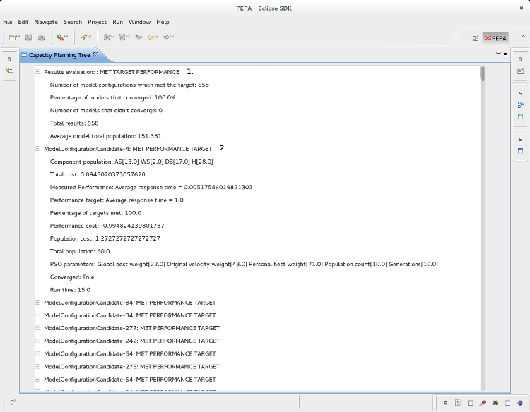

The Tree view

The above is a screen shot of the CPT Tree View in the PEPA Eclipse plug-in project.
Overview
This view complements the List View, and provides more detail about the search. It provides a summary of the results at the top of the Tree, and the individual details of each model configuration.
1. Results Evaluation details
- Results evaluation: MET TARGET PERFORMANCE. This means the search returned at least one model configuration which meets the user defined performance target.
- Number of model configurations which met the target
- Percentage of models that converged. This gives some indication of how many of the ODE evaluations converged, if an ODE evaluation did not converge the fitness is set to 10000, as the cost function has to assume the evaluation failed.
- Total results. Total number of model configurations found.
- Average model population. The average summed total population.
2. Model configuration details
- ModelConfigurationCandidate-X MET TARGET PERFORMANCE. Indicates if this model configuration has managed to meet the target.
- Component population.
- Total cost. The value of the model configuration's cost as determined by the cost function. The output of the cost function.
- Measured performance. The measured performance of the model configuration.
- Performance target. The performance the user defined.
- Percentage of targets met. If the user had set more than one performance target this reports what percentage of them met their target.
- Performance cost. This model configuration's performance cost in terms of the cost function.
- Population cost. This model configuration's population cost in terms of the cost function.
- Total population.
- PSO parameters. The parameters used to find this model configuration. This is useful if the search was a driven search, the user can use these values to perform a single PSO search.
- Converged. Did the ODE evaluation converge.
- Run time. How long did this model configuration take to evaluate.